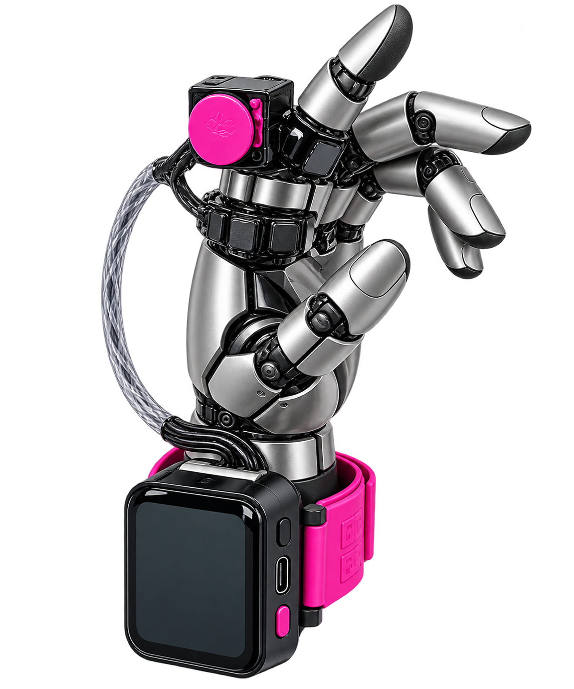
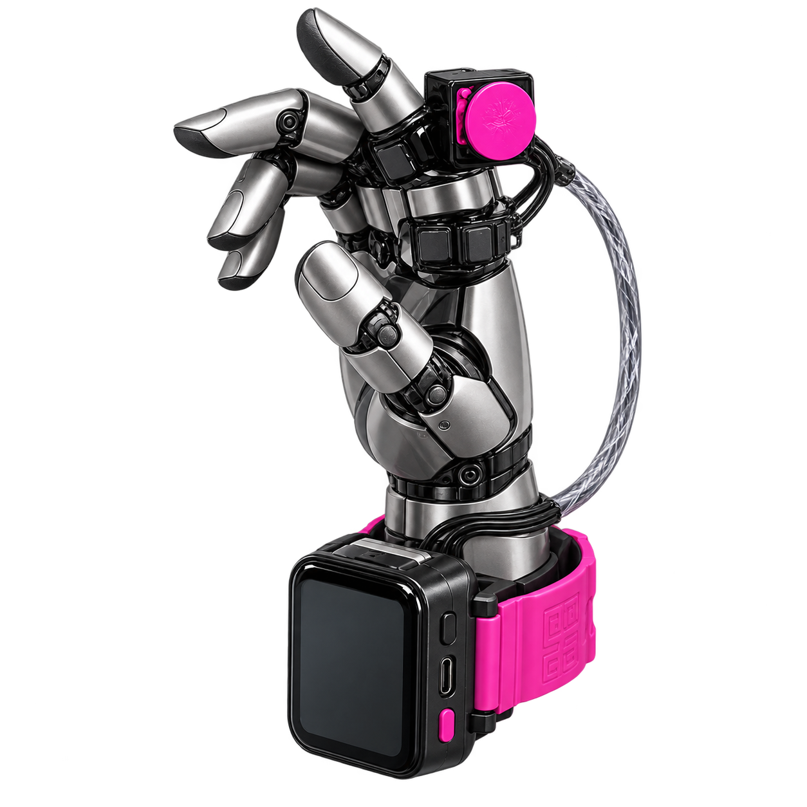
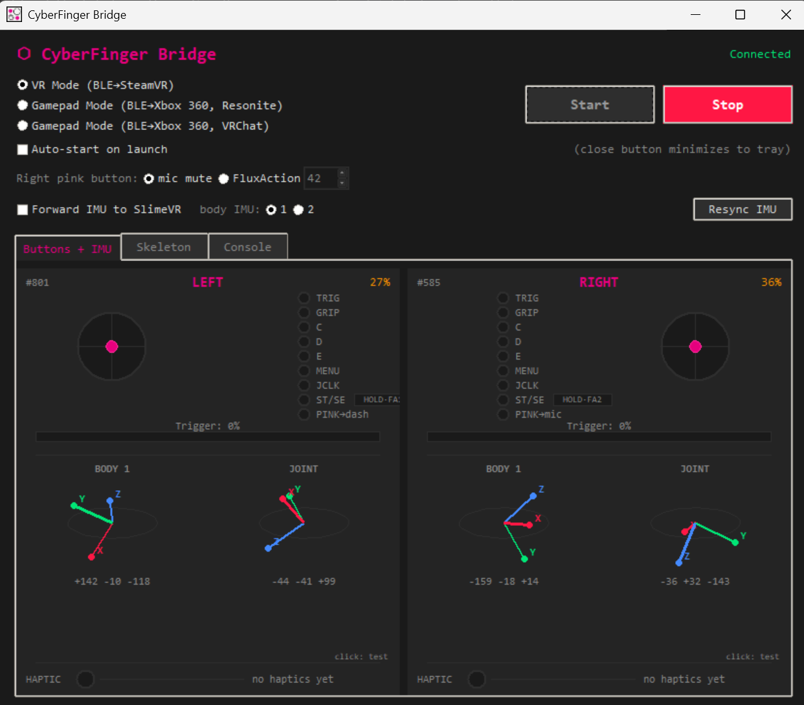
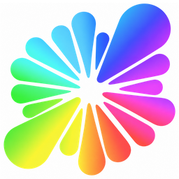
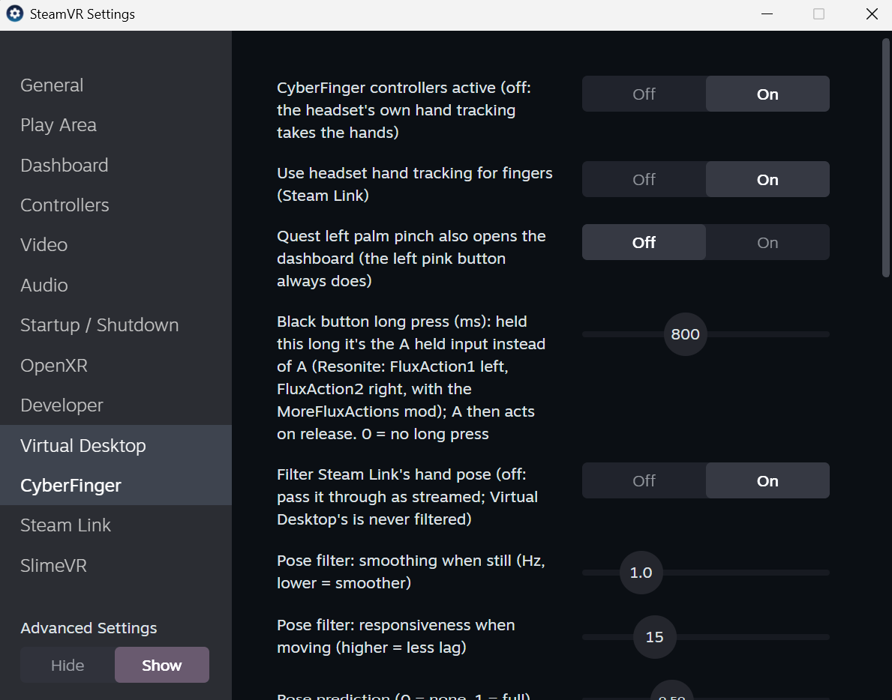
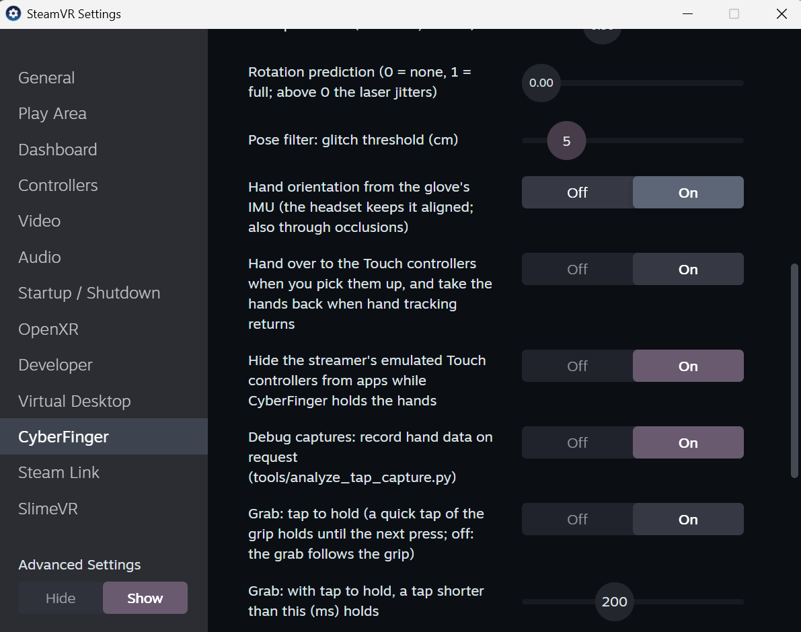
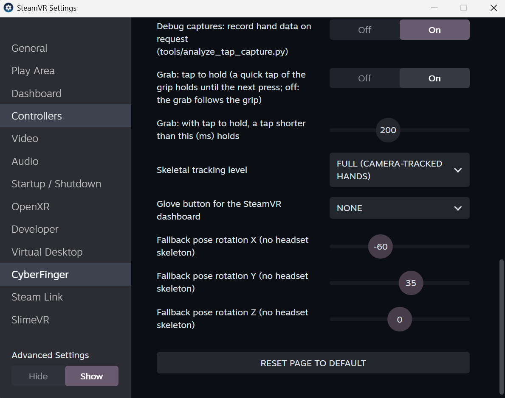

What you need
- A pair of CyberFinger gloves, left and right.
- A Windows PC with Bluetooth LE and SteamVR.
- A Meta Quest with hand tracking turned on, streaming to SteamVR through Steam Link or Virtual Desktop.
- CyberFinger Bridge, which comes with the CyberFinger SteamVR driver in one installer.
The headset tracks your hands and CyberFinger takes that tracking over: it adds the glove's buttons and joystick, and steadies the hand's rotation with the glove's motion sensor. When a hand leaves the cameras' view, it keeps turning with your wrist.
The controls
Both gloves have the same controls. Only the pink button does something different on each hand.


| Control | What it does | |
|---|---|---|
| 1 | JoystickPink cap, finger module. Push it to click. | Move and turn. Pushing it is a second action (Resonite) or a middle click (SteamVR dashboard). |
| 2 | TriggerFinger module | The main action: use, press, click. |
| 3 | GrabButton row, finger module | Grab things. A quick tap holds on until you press again; a longer press holds only while you press. The tap-to-hold can be switched off in the settings. |
| 4 | MenuButton row, finger module | Context menu in Resonite, back in the SteamVR dashboard. |
| 5 | CButton row, on some hardware revisions and models only; D and E too | In Resonite, Flux Actions for your own ProtoFlux: C is 3 on the left glove and 4 on the right, D is 5 and 6, E is 7 and 8. Elsewhere, free to assign in SteamVR's controller bindings. |
| 6 | Black buttonWrist module. Press, or hold for about a second. | Press: Resonite's dash, home in the SteamVR dashboard. It acts when you let go. Hold: a Flux Action for your own ProtoFlux in Resonite (FluxAction1 left, FluxAction2 right). |
| 7 | USB-C portWrist module | Power and charging, also while you play. |
| 8 | Pink buttonWrist module | Left glove: opens and closes the SteamVR dashboard. Right glove: mutes and unmutes your microphone, fires a Flux Action, or works the app's own mute, as you choose in the bridge. On either glove, press to switch on, hold 5–7 s to switch off. |
Not every glove has everything. Every CyberFinger has the stick, the trigger, Grab, Menu, the black and pink buttons, and a motion sensor in the wrist module. Buttons C, D and E, the motion sensor on the back of the hand (the joint IMU) and the vibration motor come with some hardware revisions and models only. Without them everything else works the same: without the joint IMU the headset alone turns the hand, and without the motor nothing vibrates.
Setting up
- Charge the gloves and switch them on. Charge through the USB-C port, then press each glove's pink button. You can also play with a glove plugged in: see Power and charging.
- Install CyberFinger Bridge. Close SteamVR, then run
CyberFingerBridge_Setup_X.Y.Z.exe(the latest release). It installs the bridge app and registers the CyberFinger driver with SteamVR. - Pair both gloves in Windows. Open Settings › Bluetooth & devices › Add device › Bluetooth. The gloves appear as
CyberFinger-left-v1bandCyberFinger-right-v1b. - Start the bridge. Open CyberFinger Bridge, choose VR Mode (BLE→SteamVR) and press Start. Each hand panel shows its glove, the battery level and the buttons as you press them. PINK lights for a moment when you press a pink button, and HOLD, beside ST and SE, fills while you hold the black button and lights once the hold counts as a Flux Action.
- Start VR. On the Quest, turn on hand tracking and start Steam Link or Virtual Desktop, then SteamVR.
- Show your hands. SteamVR lists two CyberFinger controllers, and the hands follow your fingers.
First seconds. Turn your hands a little while the headset sees them. On gloves with the joint IMU, its motion sensor lines itself up with the headset within about a second, and keeps fine-tuning as you move.
CyberFinger Bridge
The bridge connects the gloves to your PC over Bluetooth and hands them to SteamVR (or to a virtual gamepad). Keep it running while you play. Every control has a tooltip: hover over it for a reminder.

| Part | What it's for | |
|---|---|---|
| A | Mode | VR Mode is the one for SteamVR games and apps: the gloves become two SteamVR hand controllers, with the headset's hand tracking, the glove's motion sensor, vibration and the pink buttons. The two Gamepad Modes turn the gloves into one Xbox 360 controller, laid out for Resonite or for VRChat, for playing on the desktop without SteamVR: buttons and sticks only. Pick the mode before pressing Start; the bridge remembers it. |
| B | Start and Stop | Start finds both gloves (paired in Windows and switched on) and starts forwarding them. Stop lets them go: in VR the hands then fall back to the headset's hand tracking. |
| C | Status | What the bridge is doing: Idle, Scanning…, Connected, Stopped, or No devices found and Connection failed when a glove can't be reached (see Troubleshooting). |
| D | Auto-start on launch | Starts in the last mode as soon as the bridge opens, handy when it starts with Windows. The window's close button only hides the bridge to the system tray, where it keeps running; exit it from the tray icon's menu. |
| E | Right pink button | SteamVR (the default) hands the button to the game's own controls: VRChat's mute, or Resonite's with the MoreFluxActions mod set up for it. mic mute mutes and unmutes the Windows microphone for every app at once, confirmed on the glove's motor. FluxAction makes the button press a Flux Action in Resonite, the number beside it (42 unless you change it), for your own ProtoFlux; the microphone is then left alone and nothing vibrates. See Microphone and vibration. |
| F | Forward IMU to SlimeVR | Only for full-body tracking with SlimeVR: also sends each glove's wrist sensor to the SlimeVR server on this PC as a forearm tracker, and the back-of-hand sensor (on gloves with it) as a hand tracker. body IMU 1 / 2 chooses which wrist sensor to send: every glove has sensor 1, some revisions a second one at the same spot. Works alongside any mode. |
| G | Resync IMU | Makes SteamVR line the gloves' back-of-hand sensors up with the headset afresh, in about half a second of the hands in view. Use it when a hand's rotation looks off, for instance after putting a glove back on differently. It usually sorts itself out (see In VR); this is the manual way, like tapping the back-of-hand module three times. Only for gloves with that sensor, in VR Mode. |
| H | Tabs | Buttons + IMU (shown) is the gloves' live state. Skeleton shows the hand skeletons SteamVR tracks, fingers included, to check the hand tracking. Console is the bridge's log: connections, battery, the microphone, resyncs, triple taps and anything that went wrong. |
| I | Glove header | Which glove, its battery level, and on the far left a counter of the reports received from it: if it stops counting, the Bluetooth link has stalled. |
| J | Stick and trigger | The dot follows the push-stick; the bar below shows how far the trigger is pulled. |
| K | Buttons | Each lights while pressed: TRIG, GRIP, C, D and E (on gloves that have them), MENU, JCLK (pushing the stick), ST/SE (the black button). HOLD·FA1 (left) or HOLD·FA2 (right) fills while you hold the black button and lights once the hold counts as a Flux Action. PINK lights for a moment when you press the pink button, with what it does: dash on the left, mic or the Flux Action on the right. |
| L | Motion sensors | Each sensor's orientation as three axes (X red, Y green, Z blue) with its angles. BODY 1 (and BODY 2 where fitted) is in the wrist module; JOINT, on gloves that have it, is the back-of-hand sensor SteamVR uses for the hand's rotation. Turn your hand and the axes should follow: a sensor that doesn't move isn't working. |
| M | Vibration | Shows what SteamVR apps ask this glove to vibrate, in VR Mode. Click the strip for a short test pulse. Gloves without a motor stay still. |
In VR
- Hands in view: position and fingers come from the headset's hand tracking. On gloves with the joint IMU, rotation comes from the glove, which is steadier and has no delay.
- Hands out of view: with the joint IMU the hand keeps turning with your wrist, and its position waits where the headset last saw it.
- Quest controllers: pick them up and they take over within about half a second. Put them down and show your hands, and CyberFinger takes the hands back.
- Gestures: no Resonite or SteamVR action comes from hand-tracking gestures. Pinches and the Quest palm pinch fired too easily, so every action comes from the glove's buttons. You can turn the palm pinch back on in the settings. In Resonite, three hand shapes are Flux Actions, which do nothing until you build ProtoFlux for them: the thumb-pinky pinch, pointing with the index finger, and the two-finger point (index and middle out, the thumb over the other two). The pinky pinch only counts with your palm toward your face, the other fingers relaxed, and the thumb on the pinky alone: a thumb on the last two or three fingers doesn't.
- Taking a glove off: fine at any time. While a glove lies aside, the headset alone turns that hand; put it back on and move the hand in view, and within a second or two the glove's joint IMU takes over again. To hurry it along, tap the module on the back of the hand three times, firmly (two short pulses answer, on gloves with a motor), or press Resync IMU in the bridge.
Resonite
CyberFinger appears to Resonite as a Touch controller, Resonite's controller mode with a dash button. Its default bindings load on their own.
| Control | In Resonite |
|---|---|
| 2 Trigger | Primary action |
| 3 Grab | Grab. A quick tap holds on until you press again. |
| 1 Joystick | Move and turn; push for the secondary action |
| 4 Menu | Context menu |
| 6 Black button | Dash (when you let go) |
| 6 Black button, held | FluxAction1 on the left, FluxAction2 on the right: your own ProtoFlux, with the MoreFluxActions mod |
| 5 C, D, E | Flux Actions, left and right: C 3 and 4, D 5 and 6, E 7 and 8 |
| Two-finger point, pinky pinch, index point | Flux Actions from hand tracking, left and right: the two-finger point 36 and 37, the thumb-pinky pinch 38 and 39, pointing 40 and 41 |
| 8 Pink button | Left: SteamVR dashboard. Right: microphone on/off, or a Flux Action (FluxAction42 unless you pick another), or Resonite's mute (see Microphone). |
| Your fingers | Shown on your avatar, from the headset's hand tracking |
To change a binding, open SteamVR's controller bindings while Resonite is running and edit the CyberFinger defaults for Resonite. VRChat has its own CyberFinger defaults too, laid out like a Touch controller's: press a stick to jump, the Menu button opens the action menu, the black button opens the quick menu on the left and switches Safe Mode on the right, and holding the left black button turns your hand gestures on or off. Mute is the right pink button, as everywhere.
Switching between CyberFinger and the Quest controllers
The driver switches by itself. Pick up the Quest controllers and they take over. Put them down, or switch them off, and CyberFinger takes your hands back as soon as the headset tracks them again. Resonite needs two small mods to follow every switch:
- SteamVRRoleFix, a plugin for Resonite's renderer (it runs in BepInExRenderer, which the MoreFluxActions mod installs too). Without it, Resonite sometimes keeps reading the controllers you put down: your hands freeze and nothing you press arrives, although SteamVR's own menu still opens.
- CyberFingerMod 1.10 or later, a ResoniteModLoader mod. Leave its FollowActiveController setting on (the default). Without it, after switching back you can still use tools, but you can't move, turn or jump. With the CyberFinger driver, turn its GamepadBindings setting off.
For switches that happen only when you mean them, turn off the Quest's automatic switching between hands and controllers, and choose hand tracking in its quick settings. With automatic switching on, a controller that moves on the table switches the Quest back to the controllers.
ProtoFlux actions

The MoreFluxActions mod for Resonite adds 42 extra actions, Flux Action 1 to 42, that you can bind to buttons in SteamVR. Each press and release reaches ProtoFlux on your avatar, so a button can do anything you build. Without the mod, holding the black button does nothing.
- Install the mod. Use a Resonite mod manager such as Gale or r2modman, which installs the mods it needs as well: BepisLoader, InterprocessLib, BepInExRenderer and RenderiteHook. The mod has a part for the game and a part for Resonite's renderer, which reads SteamVR's buttons.
- Bind more actions, if you like. The CyberFinger defaults already use some, left then right: the black button's hold is 1 and 2, C, D and E are 3 to 8, the two-finger point is 36 and 37, the thumb-pinky pinch is 38 and 39, and pointing is 40 and 41. The right pink button can be one too (see Microphone). To change them, open SteamVR's controller bindings while Resonite runs and switch to the Flux Actions tab: it lists all 42, for any button of any controller.
- React in ProtoFlux. Put dynamic impulse receivers anywhere under your avatar, with these tags (the number is the action's):
| Tag | Receiver | When |
|---|---|---|
FluxAction1.Pressed | Dynamic Impulse Receiver | the button goes down |
FluxAction1.Released | Dynamic Impulse Receiver | the button goes up |
FluxAction1 | Dynamic Impulse Receiver With Value, bool | both: true on press, false on release |
The impulses run on your own client, as dynamic impulses do. Whatever your ProtoFlux changes is seen by everyone as usual.
SteamVR dashboard
| Control | In the dashboard |
|---|---|
| 8 Left pink button | Open and close the dashboard |
| 2 Trigger | Click. A light press first holds the laser still, so the click lands where it points. |
| 3 Grab | Right click |
| 1 Joystick | Scroll; push for a middle click |
| 4 Menu | Back |
| 6 Black button | Home |
Microphone and vibration
Microphone on/off
Press the right glove's pink button to mute your microphone in the game, and press it again to unmute. The game's microphone icon shows the state. The bridge must be running in VR Mode, with Right pink button on SteamVR (the default), which leaves the button to the game. In VRChat it is VRChat's mute straight away. In Resonite, which has no mute of its own for controllers, it presses FluxAction42, which the MoreFluxActions mod turns into Resonite's mute, like the dash's mute button. That's its MuteToggleAction setting, 42 by default; set it to 0 in your mod manager's config editor if you'd rather use FluxAction42 for something else.
To mute every app at once instead, Discord included, set Right pink button to mic mute. It mutes Windows' default microphone (SteamVR can make the headset's microphone the Windows default), and the glove confirms on its motor. Games then don't show you as muted: they just hear silence.
To use the button in Resonite for something else, set Right pink button to FluxAction at the top of CyberFinger Bridge and pick a number from 1 to 42 (42 at first). The button then presses and releases that Flux Action, without vibrating, and leaves the microphone alone. Only the microphone toggle confirms on the motor. The bridge remembers the choice.
Vibration
Gloves with a vibration motor (some hardware revisions have one) buzz when an app asks for it, for example when you touch a button or grab something. The glove also confirms the microphone button:
Three quick pulses: microphone muted
One buzz: microphone live
To test the motor, click the HAPTIC strip at the bottom of a hand panel in CyberFinger Bridge (VR Mode). That glove buzzes briefly.
Power and charging
- Switch on: press the pink button.
- Switch off: hold the pink button for about 5–7 seconds. After a moment the glove shows a power-off notice; keep holding and its screen goes dark: it's off. Let go before that to cancel.
- Short press or hold: a short press is the button's job in VR (dashboard or microphone). Only a hold starts the power-off.
- Charging: through the USB-C port. The glove charges and works at the same time, so you can keep playing with it plugged into a cable or an external battery (a power bank). The battery level shows in the bridge's hand panels and in SteamVR.
Settings
Open SteamVR's settings and choose CyberFinger in the list on the left. Some settings only appear with Advanced Settings: Show (bottom left). Settings marked live take effect at once; after restart ones when SteamVR next starts. The pages below go top to bottom.

| Setting | Default | What it does |
|---|---|---|
| CyberFinger controllers activelive | on | The main switch. Off, the driver lets go of the hands and the headset's own hand tracking drives them, as if CyberFinger weren't installed: to compare, or to play without the gloves. |
| Use headset hand tracking for fingersafter restart | on | CyberFinger takes the fingers and the hand's pose from the headset's hand tracking (Steam Link or Virtual Desktop). Leave it on. Off is for troubleshooting only: the fingers then follow the glove's buttons, and the hand is turned by the fallback rotation on the last page. |
| Quest left palm pinch also opens the dashboardlive | off | The Quest opens the SteamVR dashboard when you pinch with the left palm facing you. It fired too easily, so the left pink button does it instead. On: both open it. |
| Black button long press (ms)after restart | 800 ms | Hold the black button this long and it becomes A held (in Resonite, FluxAction1 on the left and FluxAction2 on the right) instead of its usual job. A shorter press is the usual black button, sent as you let go. 0 turns the long press off: the button then acts as soon as you press it. Up to 2000 ms. |
| Filter Steam Link's hand poselive | on | Steam Link's hand positions tremble by a few millimetres. The filter steadies a still hand strongly and a moving one hardly at all, so it adds little delay. Virtual Desktop's hands are never filtered: they arrive smooth. Off: the pose as streamed. |
| Pose filter: smoothing when still (Hz)live | 1.0 | How much a still hand is steadied. Lower is calmer but slower to follow small movements; higher is more direct but shakier. From 0.1 to 5. |
| Pose filter: responsiveness when movinglive | 15 | How quickly the filter lets go as the hand speeds up. Higher follows fast movements with less delay; lower keeps smoothing while you move. From 0 to 60. |
| Pose predictionlive | 0.5 | The hand arrives a little late over the stream; SteamVR can move it ahead along its motion to make up for it. 0: no prediction, the hand trails slightly. 1: full, on time but overshooting when you stop. 0.5 is the balance. Up to 1.5. |

| Setting | Default | What it does |
|---|---|---|
| Rotation predictionlive | 0 | The same for the hand's rotation. Above 0 a laser pointer from the hand jitters, since the beam magnifies every small turn. With the glove's back-of-hand sensor the rotation has no delay anyway. |
| Pose filter: glitch threshold (cm)liveadvanced | 5 cm | A hand that jumps further than it plausibly could is taken for a tracking glitch and held back. Raise it if quick movements get held back; lower it to catch smaller glitches. From 1 to 30 cm. |
| Hand orientation from the glove's IMUlive | on | On gloves with the back-of-hand sensor (the joint IMU), the hand's rotation comes from it: steadier than the headset's, without its delay, and it keeps turning while the headset can't see the hand. The headset keeps it lined up; the driver learns how the glove sits within a second or two and remembers it for next time. Off: rotation from the headset alone. No effect on gloves without the sensor. |
| Hand over to the Touch controllerslive | on | Pick up the Quest's Touch controllers and, about half a second later, they get the hands; show your bare hands again and CyberFinger takes them back. Off: CyberFinger keeps the hands even while you hold controllers. |
| Hide the streamer's emulated Touch controllersliveadvanced | on | Steam Link and Virtual Desktop also present your tracked hands to apps as Touch controllers. While CyberFinger holds the hands, those are marked not tracked, so apps don't show them as extra controllers or pick them instead of CyberFinger. Undone when CyberFinger is switched off. |
| Debug capturesliveadvanced | off | Lets the developer tool tools/analyze_tap_capture.py record the hand data for analysis. Leave it off unless you're asked for a capture. |
| Grab: tap to holdlive | on | A quick tap of Grab keeps holding what you grabbed until the next press, so you don't have to keep the button down; a longer press grabs only while held. Off: Grab always holds only while pressed. |
| Grab: with tap to hold, a tap shorter than this (ms) holdsafter restart | 200 ms | How quick a tap must be to hold on. Raise it if holds don't catch; lower it if ordinary presses latch by mistake. |

| Setting | Default | What it does |
|---|---|---|
| Skeletal tracking levelafter restart | Full | What CyberFinger tells apps about its finger tracking. Full: camera-tracked fingers. Partial: VRChat then keeps its hand-gesture controls off, which otherwise react to your finger poses. Resonite ignores it. |
| Glove button for the SteamVR dashboardafter restart | None | Also open the SteamVR dashboard with C, D or E, besides the left pink button: for gloves without a working pink button (older firmware), or if you'd rather. |
| Fallback pose rotation X, Y, Zliveadvanced | −60, 35, 0 | Only used when no hand skeleton has ever come from the headset (the hand-tracking option on the first page off): how the CyberFinger hand is turned relative to the headset's hand. Leave them. |
| Reset page to default | Puts every CyberFinger setting back to its default. |
Troubleshooting
- The bridge finds no gloves
- Pair both gloves in Windows Bluetooth, switch them on, and check that Windows shows them as connected. The bridge looks for names containing "left" and "right".
- SteamVR shows no CyberFinger controllers
- Check that CyberFinger is enabled under SteamVR's Settings › Startup / Shutdown › Manage Add-ons, and restart SteamVR after installing.
- The buttons do nothing
- The bridge must be started in VR Mode (BLE→SteamVR). The hand panels show each button as you press it.
- The pink buttons or the vibration do nothing
- Both need glove firmware 1.3.3 or later, and vibration needs a glove with a motor (some hardware revisions only).
- The hands jitter with Steam Link
- Keep "Filter Steam Link's hand pose" on.
- Resonite shows stiff hands or asks for a binding
- In SteamVR's controller bindings for Resonite, choose the CyberFinger defaults.
- A hand points the wrong way after you took the glove off
- On gloves with the joint IMU, it should sort itself out within a second or two of moving the hand in view. If it doesn't, tap the module on the back of that hand three times, firmly (a glove with a motor answers with two short pulses), or press Resync IMU in CyberFinger Bridge.
- Holding the black button does nothing in Resonite
- Install the MoreFluxActions mod, with its renderer part, and put a receiver tagged
FluxAction1.Pressed(left) orFluxAction2.Pressed(right) under your avatar. The bridge's hand panel lights HOLD beside ST/SE when the hold is recognised. - After switching back from the Quest controllers, my hands freeze in Resonite
- Install SteamVRRoleFix, then restart Resonite. See Switching between CyberFinger and the Quest controllers.
- After switching back, tools work in Resonite but I can't move or jump
- Install CyberFingerMod 1.10 or later, with FollowActiveController on.
- CyberFinger doesn't take over again after I put the controllers down
- The headset is still in controller mode, and sends no hand tracking. Switch the controllers off, or put them where they can't move, or pick hand tracking in the Quest's quick settings.
- Muting doesn't silence my app
- The app records from a microphone other than the Windows default. Choose the default microphone in the app, or make the headset's microphone the Windows default.